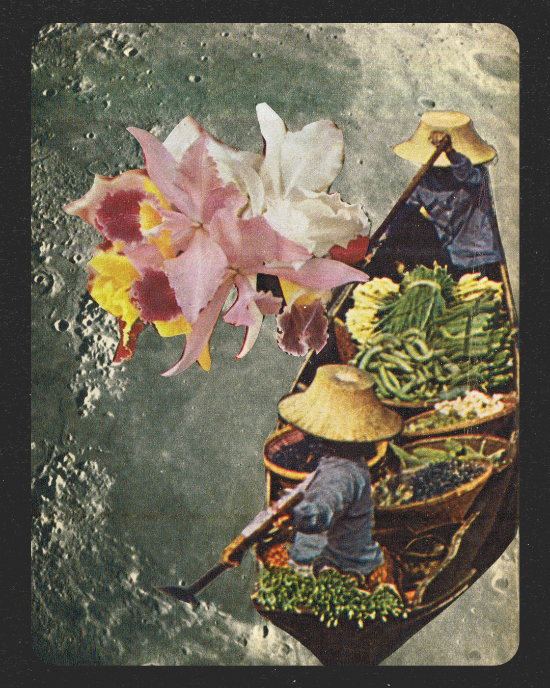
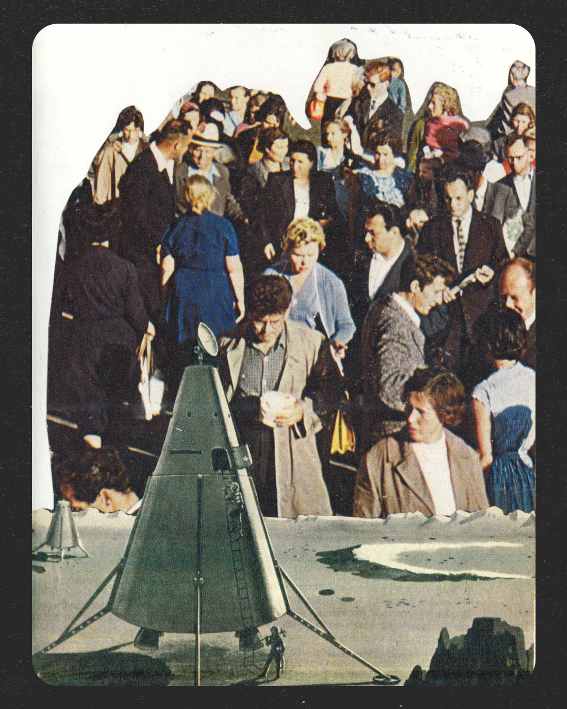
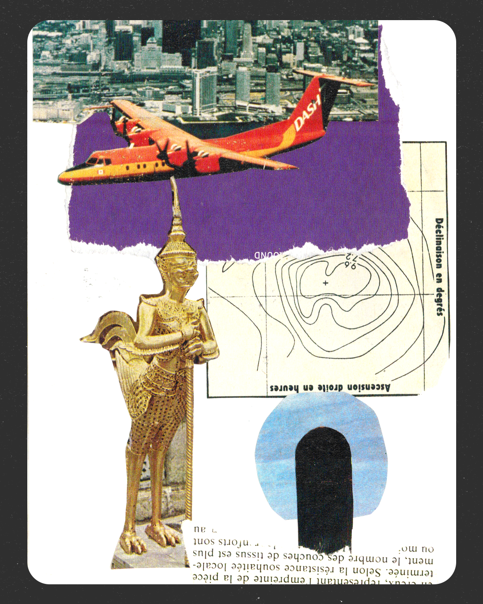
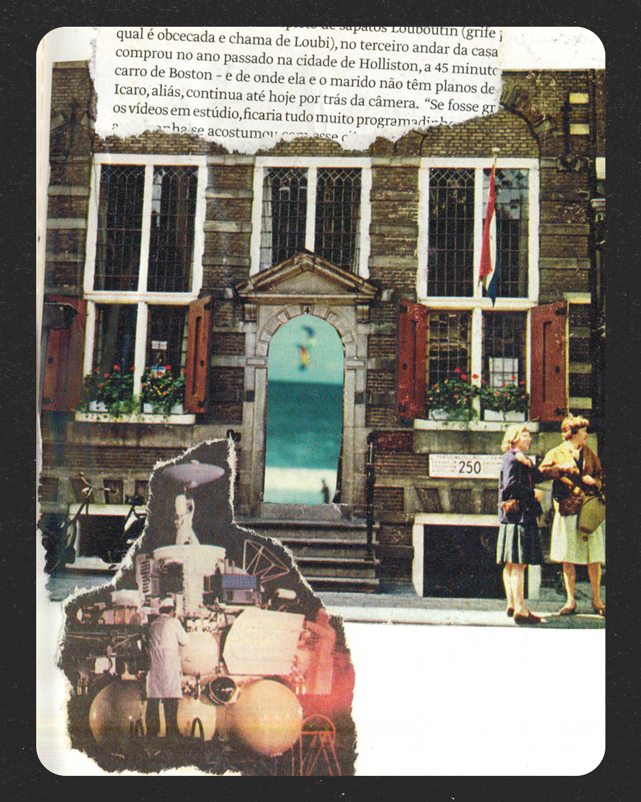
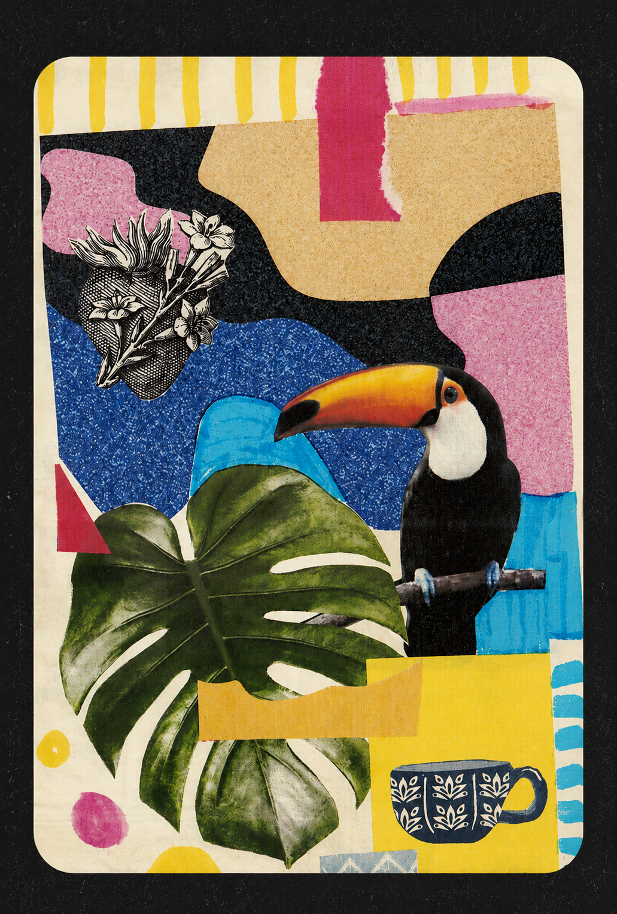

Uma visão mais ampla da prática. Além dos destaques da home, esta página reúne projetos, estudos e sistemas desenvolvidos em diferentes contextos e escalas.

Estratégia de marca, narrativa e alinhamento executivo para um novo ciclo de crescimento.
Em desenvolvimento
Protocolo de coordenação que torna visível a capacidade operacional de equipes criativas.
Ver projeto →Plataforma de marca que reposiciona pagamentos como força que mantém a economia em movimento.
Ver projeto →
Pesquisa em design computacional e sistemas tipográficos generativos com p5.js.
Ver projeto →
Sistema editorial para redes sociais — consistência de marca sem abrir mão de diferenciação por editoria.
Ver projeto →
Reestruturando um sistema visual em um ambiente de baixa governança de marca.
Ver projeto →